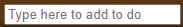
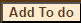
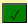
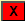

HELP - Instructions
- Add Item to do list by keying item in 'Type here to add to do' box. 
- Click 'Add To do, to add item to the list. 
- When the To do is completed, click the green check button. If checked in error, click again.
- If you want to delete a To do, click the red X to remove it.
Note: List will be saved when you close your browser, so you can continue where you left off when you re-open
the To Do List!